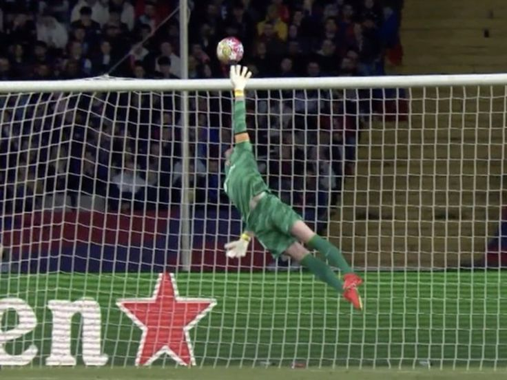
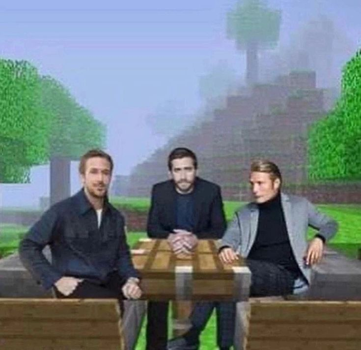

Jugar videojuegos
Durante mis tiempos libres, siempre intento jugar videojuegos cada que se pueda.

Me gusta jugar de portero los fines de semana con mi equipo.

Me gusta bastante pasar tiempo de calidad con mis amigos (y tambien con mi familia XD).
Durante mis tiempos libres, siempre intento jugar videojuegos cada que se pueda.

La musica siempre ha sido algo que ha dado sazon a mi vida y a mi tiempo libre.